Events & Teachings
Sangchen Thongdrol Ling observes traditional ritual cycles, along with occasional teachings, in accordance with the Nyingma lineage. These include seasonal prayers, commemorative rituals, and community-oriented religious gatherings.
Public teachings and events are not held on a fixed schedule and may vary depending on the presence of resident teachers, visiting lamas, and the monastic calendar.
Information on upcoming events, teachings, and ritual observances will be updated as and when it is made available.
Recent Religious Activities
The entries below document selected recent religious observances, visits, ceremonies, and community activities associated with Sangchen Thongdrol Ling.
17 January 2026 — Felicitation of Ven. Lopon Yeshey Dorjee Bhutia
A felicitation ceremony was held at Sangchen Thongdrol Ling in honour of Ven. Lopon Yeshey Dorjee Bhutia following his recognition as Best Monastic School Teacher by the Government of Sikkim in December 2025.
The recognition reflects the continuing role of monastic education within the monastery’s institutional life and its ongoing connection with traditional systems of Buddhist learning in Sikkim and the Darjeeling hills.
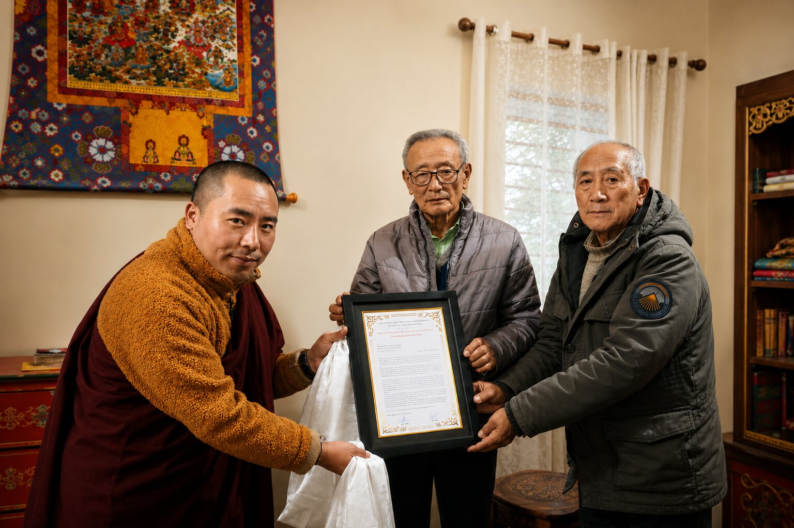
Felicitation ceremony organised by members of the Ging Sikkimese Bhutia community in honour of Ven. Lopon Yeshey Dorjee Bhutia following his recognition as Best Monastic School Teacher by the Government of Sikkim, 17 January 2026.
30 November 2025 — Annual Monastic Examinations
Annual examinations for young monks undergoing monastic education at Sangchen Thongdrol Ling were conducted in November 2025.
The examinations formed part of the monastery’s continuing emphasis on scriptural learning, memorisation, ritual training, and the preservation of monastic educational traditions within the Nyingma lineage.
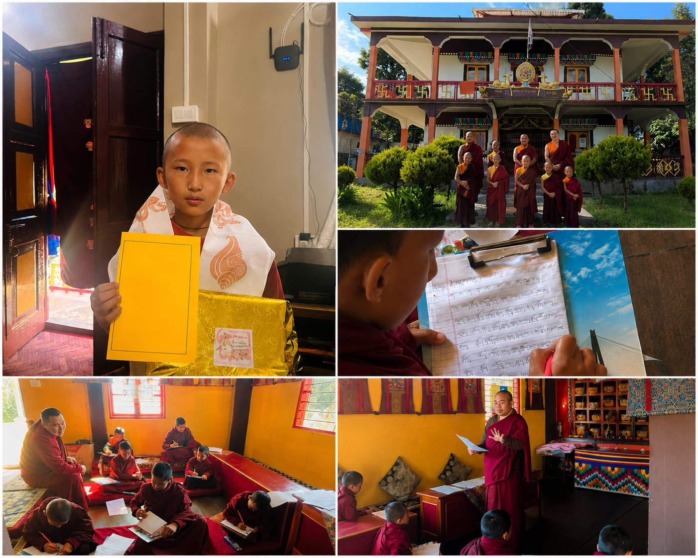
Annual examinations of young monks conducted at Sangchen Thongdrol Ling, 30 November 2025.
22 September 2025 — Visit of Ven. Sonam Lama
Sangchen Thongdrol Ling received an official visit from Ven. Sonam Lama, Hon’ Minister of Ecclesiastical Affairs, Public Health Engineering (PHE), and Water Resources, Government of Sikkim, in September 2025.
The minister was welcomed by monks and members of the local community upon his arrival at the monastery. The visit reflected the continuing institutional relationship between Sangchen Thongdrol Ling and the Ecclesiastical Affairs Department of the Government of Sikkim.
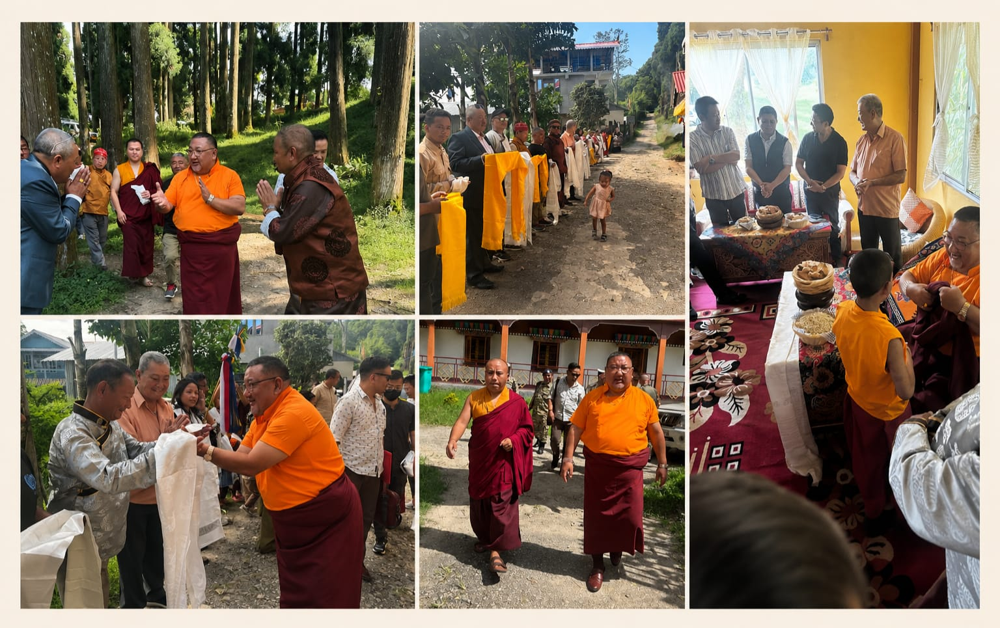
Visit of Ven. Sonam Lama, Hon’ Minister of Ecclesiastical Affairs, Public Health Engineering (PHE), and Water Resources, Government of Sikkim, welcomed by monks and local residents at Sangchen Thongdrol Ling, 22 September 2025.
11 July 2025 — Saga Dawa Procession
A Saga Dawa procession was conducted at Sangchen Thongdrol Ling in July 2025 under the guidance of Venerable Yap Omdzed of Pemayangtse Monastery.
The observance brought together monks, local residents, and participants from surrounding areas. Community members from different faith backgrounds also assisted in the preparations and joined the procession activities associated with the annual observance.
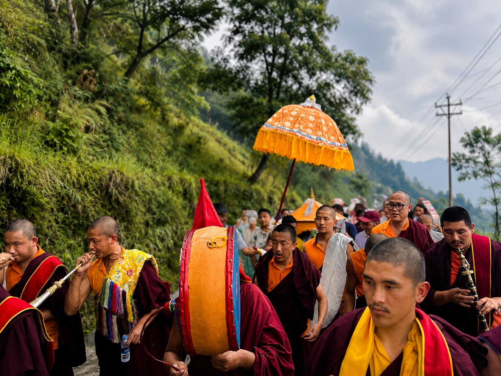
Saga Dawa procession at Sangchen Thongdrol Ling under the guidance of Venerable Yap Omdzed of Pemayangtse Monastery, 11 July 2025.
23 May 2024 — Saga Dawa & Consecration Ceremony
Sangchen Thongdrol Ling commemorated Saga Dawa in May 2024 with three days of prayers and ritual observances, including the consecration of the newly renovated monastery structure.
On 23 May 2024, His Eminence Kyabje Lachung Rinpoche Jigmed Namgyal bestowed the Long Life Empowerment associated with the Rigzin Sogdrub cycle of teachings. The observances were attended by monks, devotees, and local residents from the surrounding region.
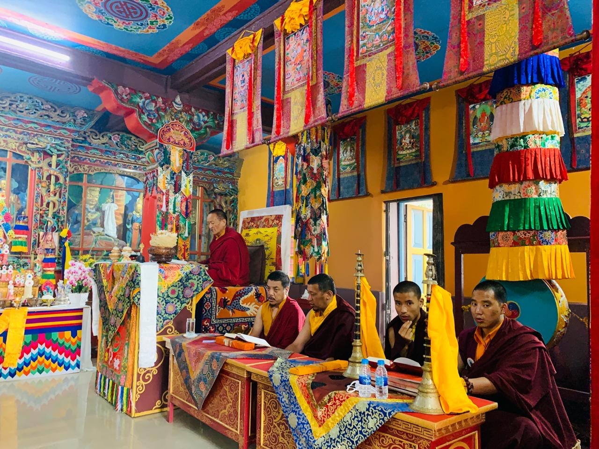
Saga Dawa observances and consecration ceremony at Sangchen Thongdrol Ling, May 2024, presided over by His Eminence Kyabje Lachung Rinpoche Jigmed Namgyal.
10 September 2022 — Pang Lhabsol Observance
Sangchen Thongdrol Ling observed Pang Lhabsol in September 2022 through ritual prayers and community participation associated with the traditional observance.
The occasion also involved local residents and community members assisting in the cleaning and preparation of the monastery surroundings prior to the ceremonies. The observance reflects the continuing relationship between the monastery and the surrounding community.
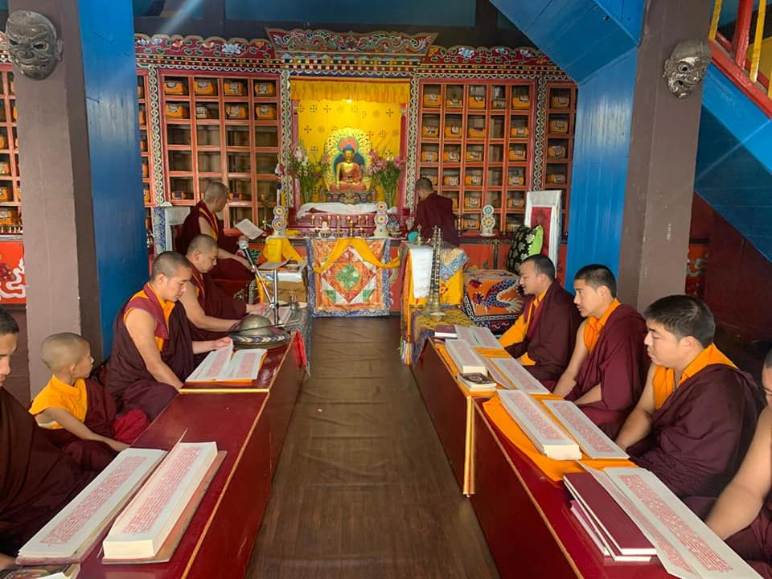
Pang Lhabsol observances at Sangchen Thongdrol Ling, alongside community participation in preparation and cleaning activities, 10 September 2022.
7 August 2022 — Guru Rinpoche’s Trungkar Tshechu
Sangchen Thongdrol Ling observed Guru Rinpoche’s Trungkar Tshechu in August 2022 through prayers and ritual observances conducted within the monastery prayer hall.
The observance forms part of the monastery’s continuing Nyingma ritual tradition associated with Guru Padmasambhava, whose teachings and tantric transmissions remain central to the spiritual lineage maintained at the monastery.
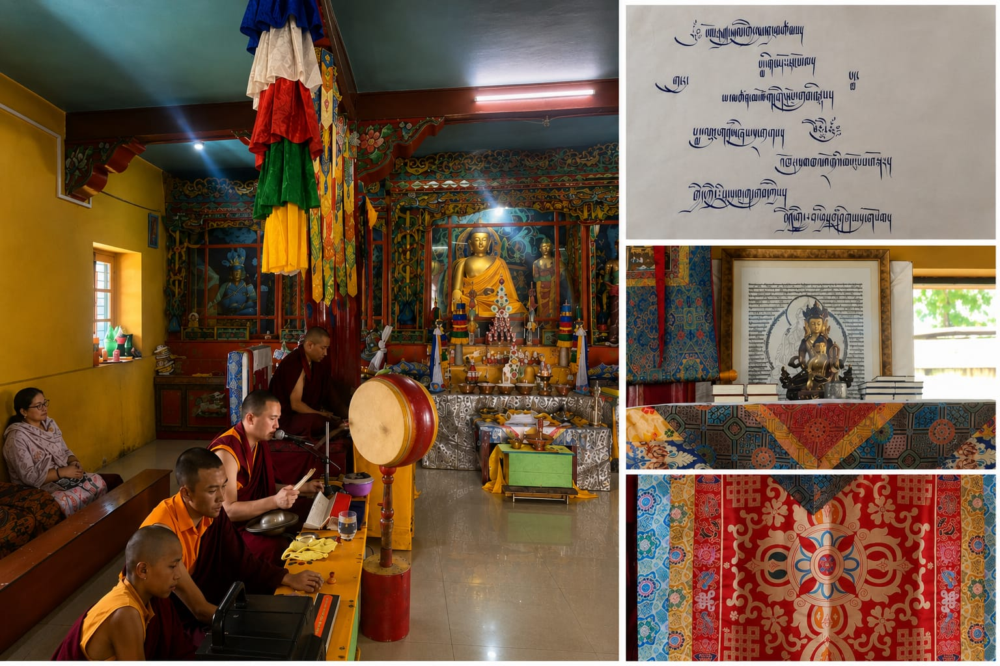
Monks during Guru Rinpoche’s Trungkar Tshechu observances within the prayer hall of Sangchen Thongdrol Ling, 7 August 2022.
12–14 June 2022 — Visit of H.E. Khyentse Serta Congtul Rinpoche
Sangchen Thongdrol Ling hosted His Eminence Khyentse Serta Congtul Rinpoche during Saga Dawa observances in June 2022.
The visit included blessings, ritual observances, and interactions with monks, devotees, and local residents gathered within the monastery grounds. The occasion formed part of the monastery’s continuing connection with wider Vajrayana Buddhist lineages and visiting teachers.
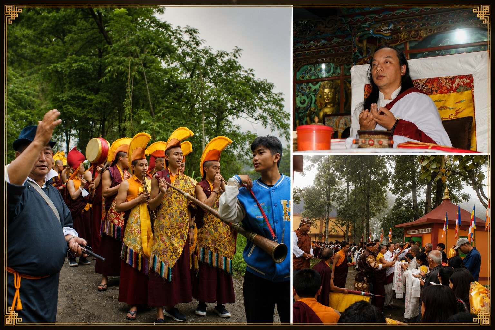
H.E. Khyentse Serta Congtul Rinpoche during Saga Dawa observances at Sangchen Thongdrol Ling, June 2022.
6 May 2022 — Buddha Purnima Observance
Sangchen Thongdrol Ling observed Buddha Purnima in May 2022 with prayers, hoisting of prayer flags, and ritual observances dedicated to world peace.
The occasion also marked the induction of a new monk student from Nepal into monastic learning at the monastery. Devotees and visitors from nearby areas, including a religious procession from Phoobsering, participated in the observances.
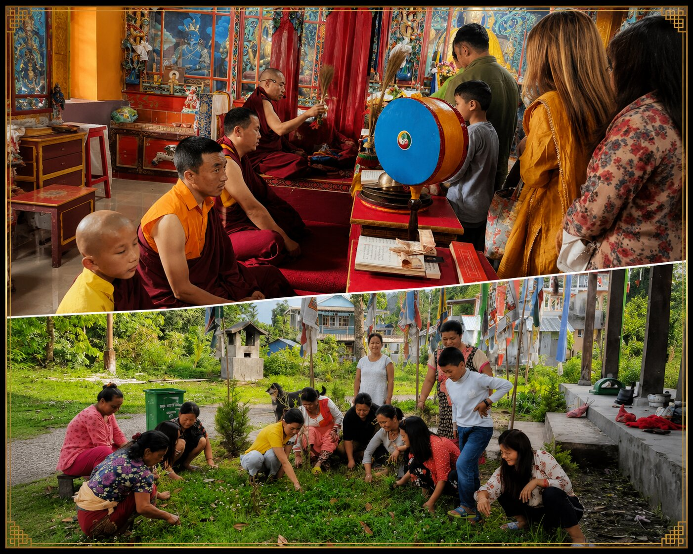
Buddha Purnima observances at Sangchen Thongdrol Ling, 6 May 2022. The images depict ritual prayers and blessings within the monastery, alongside local self-help group members from different faith backgrounds participating in cleaning and preparation activities for the observance.
26 April 2022 — Monastic Calligraphy Recognition
Lopon Yeshey Dorjee Bhutia received a Certificate of Merit for securing first position in the senior-level calligraphy competition for monastic schools (Laptas) organised by the Chhogyal Palden Thondup Namgyal Centennial Committee, Sikkim.
The recognition was presented by the Ecclesiastical Affairs Department, Government of Sikkim, reflecting the continuing importance of traditional calligraphy, scriptural learning, and monastic education within the wider Buddhist scholastic tradition.
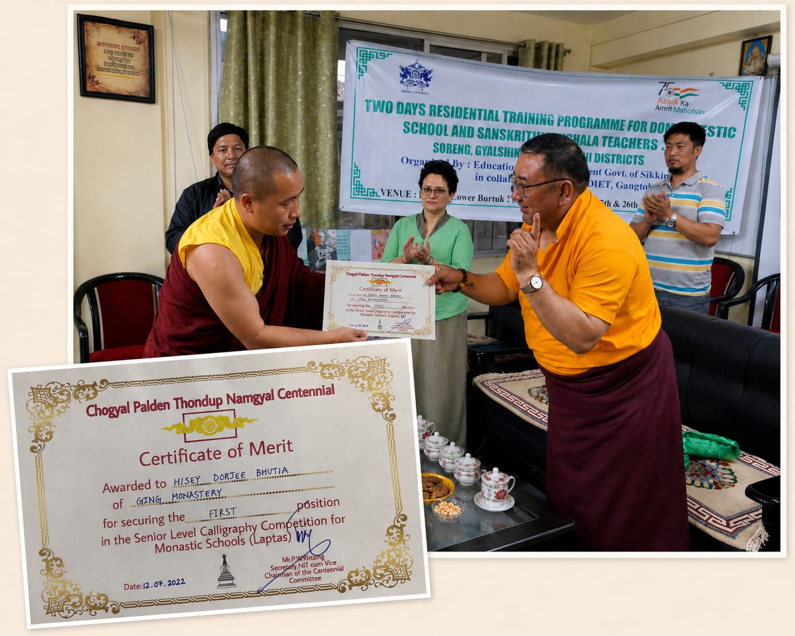
Certificate of Merit awarded to Lopon Yeshey Dorjee Bhutia for senior-level monastic calligraphy, alongside its presentation by Ven. Sonam Lama, Hon’ Minister of Ecclesiastical Affairs, Public Health Engineering (PHE), and Water Resources, Government of Sikkim, 26 April 2022.
31 March 2022 — Reinstallation of the Genjira
Sangchen Thongdrol Ling conducted the ceremonial reinstallation of the monastery’s Genjira in March 2022 in the presence of Venerable Yap Loben Tempa Gyatso and monks from Sangchen Pemayangtse.
The ceremony included Rapney consecration rituals and the installation of sacred zhungh prepared over an extended period. The occasion also marked the arrival of a young student from South Sikkim to begin monastic learning at the monastery.
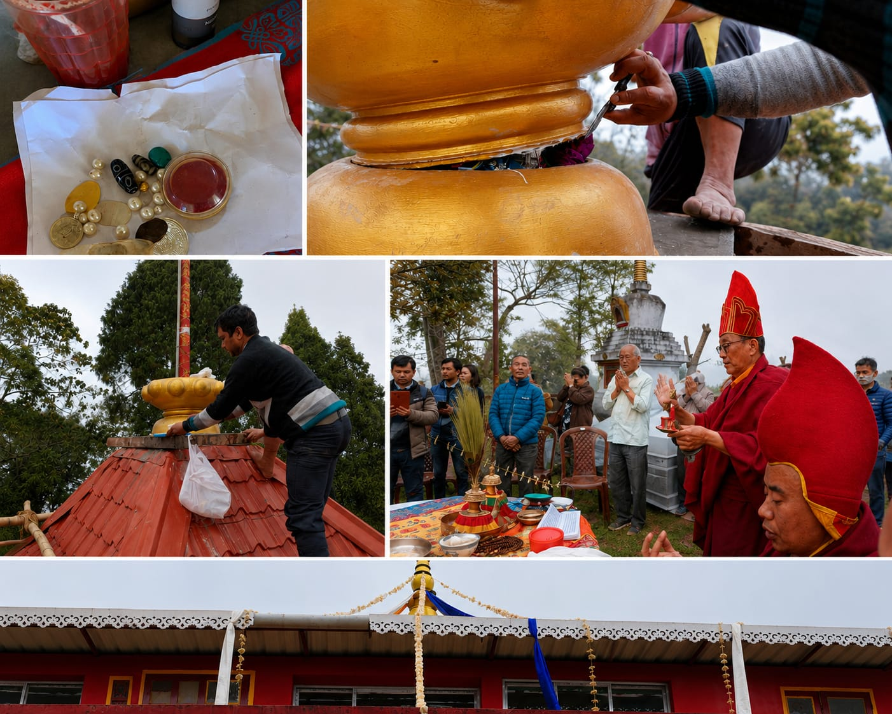
Reinstallation of the Genjira and associated Rapney consecration rituals at Sangchen Thongdrol Ling, 31 March 2022.
24 October 2021 — Consecration Ceremony of Head Lama
Sangchen Thongdrol Ling formally conducted the consecration ceremony (Thee Nga-Sol) for Lopon Yeshey Dorjee Bhutia following his appointment as Head Lama of the monastery.
The ceremony took place in the presence of monks, devotees, and local residents, marking the continuation of the monastery’s institutional and lineage-based connection with Pemayangtse Monastery and the Ecclesiastical Affairs Department of the Government of Sikkim.
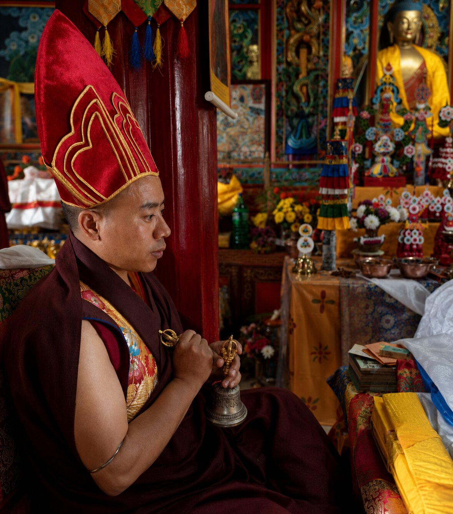
Consecration ceremony (Thee Nga-Sol) of Lopon Yeshey Dorjee Bhutia as Head Lama of Sangchen Thongdrol Ling, 24 October 2021.